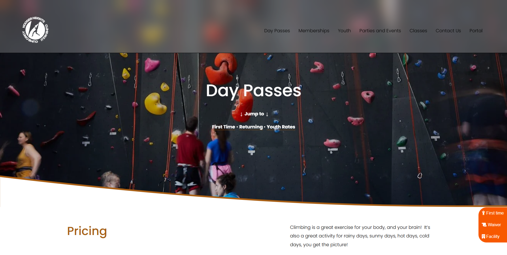

Click to edit text - Explain the challenges...
UX/UI Design
Hoosier Heights Bloomington
Fix! A Mobile Solution That Brings The Power Of Budgeting Into The Hands Of Millennials

Fix! The COVID-19 pandemic has greatly affected daily lives and led to extreme consumer behavior and panic buying. As a consequence, daily necessities, food and other resources ran out. World Health Organisation [WHO] suggested that in order to contain this virus, communities need to coordinate together. Even just small benefitting actions in individual communities can benefit the whole world.
Fix! Community resilience is a term used to describe the ability of communities to cope together to recover from large-scale emergencies. This means communities coordinating to strengthen factors such as social networks which will support people in times of crisis. This is proven by the committee for community engagement which was established by CDC in 1995 and the community engagement during the AIDS epidemic.
Increase Online Sales
Promote New Programs
Dispell Initial Concerns
Challenges
Solution
Click to edit text - Explain the solution approach...
Research
Click to edit text - Detail the research methodology and findings...
Ideation
Click to edit text - Describe the ideation process and concepts explored...
Wireframe
Click to edit text - Show wireframe iterations and decisions...
Add wireframe images here
Testing
Click to edit text - Explain testing methods and results...
Design
Click to edit text - Present the final design decisions and rationale...
Add design mockups here
Accessibility
Click to edit text - Describe accessibility considerations and implementations...
Prototype
Click to edit text - Link to or describe the interactive prototype...
Add prototype screenshots or embed here
Impact
Click to edit text - Measure and describe the project's impact...
Next Steps
Click to edit text - Outline future improvements and iterations...